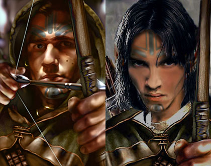

Version 16 - Check for the most recent version
Languages: English
Platforms: Windows, Mac OS X, and Linux
This is a WeiDU mod which adds a joinable NPC from BG1, Kivan, and under certain circumstances, his elven wife, Deheriana, to the cast of BG2 actors.
This mod is designed to work with the original Baldur's Gate II: Shadows of Amn, with or without the Throne of Bhaal expansion pack, or Baldur's Gate II: Enhanced Edition. The mod should be compatible with other WeiDU mods.
Windows
Kivan and Deheriana Companions for BG2 is packaged and installed with WeiDU and is distributed as a self-extracting archive. To install, simply double-click the archive and follow the instructions on screen.
Alternatively the files can be extracted from the archive using WinRAR. If properly extracted, you should have a kivan folder and setup-kivan.exe in your game folder. To install, simply double-click setup-kivan.exe and follow the instructions on screen
Please run setup-kivan.exe in your game folder to reinstall, uninstall or otherwise change components.
Mac OS X
If the mod was previously installed, uninstall it before extracting the new version. Kivan and Deheriana Companions for BG2 is packaged and installed with WeiDU. To install, simply extract the contents of the mod into your game folder. If properly extracted, you should have a kivan folder, setup-kivan, and setup-kivan.command in your game folder. To install, simply double-click setup-kivan.command and follow the instructions on screen.
Linux
Download the latest version of WeiDU for Linux from weidu.org and extract (at least) the WeiDU, weinstall and tolower executables in a $PATH directory (E.G. /usr/bin). Following that, open a terminal, cd to your game installation directory, run `tolower' and answer Y to both queries.
You can avoid running the second option (linux.ini) if you've already ran it once in the same directory. To save time, the archive is already tolowered, so there's no need to run the first option (lowercasing file names) either if you've extracted only this mod since the last time you lower cased file name. If you're unsure, running tolower and choosing both options is the safe bet.
This mod contains audio that requires oggdec on Linux. oggdec is typically installed in most distributions and, if not, is usually part of the vorbis-tools package.
After that, run 'weinstall kivan from your game installation directory to install or uninstall the mod.
Please note that versions prior to v15 will have to be completely uninstalled prior to installing v15 or later.
Kivan and Deheriana Companions for BG2
This is the main component of the mod; see the next section for more information. Content for the Throne of Bhaal part of the game will be installed automatically for games with the ToB expansion installed.
Alternative Deheriana Class
Deheriana is, by default, a Fighter/Mage/Cleric. This component will allow you to change her class to a Wild Mage, Enchanter, or Invoker. If you wish to keep her as a F/M/C, then simply skip this component.
Herd's Alternative Kivan Portrait
This component will provide an alternate portrait for Kivan. Shown below is the defaut portrait on the left and Herd's alternate on the right.

This is a WeiDU mod which adds a joinable NPC from BG, Kivan, and under certain circumstances, his elven wife, Deheriana, to the cast of BG2 actors.
The mod assumes that Kivan was in the group at the end of BG. The Archer will be looking for you in the Promenade District of Athkatla, having tracked you down this far from Baldur's Gate after you abduction. Once in the party, Kivan will interact with both the PC and the NPCs. If the PC is female, choosing certain dialogue options will hint at her interest in Kivan as a romanceable character. In this case, Deheriana's arc of the story would not occur, and a few flirtatious talks will appear after visiting Spellhold.
If the PC is male or not interested in capturing Kivan's heart, Deheriana's story arc will develop in the end of the game. To see the story in full, please do not miss the talks with Aphril, Demin and Ellesime (in the end of the game). A happy ending for Deheriana's story will occur if Aerie or Cernd are in the party, or if the PC is one of the healing classes (Ranger, Druid, Cleric or Paladin)
Kivan and Deheriana NPCs have both SoA and ToB content, such as dialogues with the PC and the NPCs, interjections into the game events, additional encounters, and Player-Initiated Dialogues.
Deheriana
Deheriana is a “hidden” NPC in this mod. Basically she can be summoned in Suldanessellar, while talking to Demin. Depending on the options you selected on install, Deheriana will be a Cleric-Mage-Fighter, an Enchanter, a Diviner or a Wild Mage. Her content will not be affected by her class selection.
Deheriana is intended as a ToB NPC, with only a short story-arc occurring in SoA. At present, Cernd, Aerie and Kivan will “bombard” Deheriana with chats when she joins the party, and she will talk once to the PC during a 30 minutes interval upon her joining. The outcome of those talks will decide her fate.
She will either die in 30 minutes or during the congratulatory speech from Ellesime (whichever comes first), or she will be “restored”, an event which manifests itself in the increase of some of her stats and an XP bonus that adjusts to the party level to make Deheriana roughly equal in XP to the PC.
| Deheriana | Initial Stats | "Restored" Stats |
|---|---|---|
| Strength | 9 | 9 |
| Dexterity | 12 | 15 |
| Constitution | 9 | 14 |
| Intelligence | 15 | 17 |
| Wisdom | 17 | 17 |
| Charisma | 14 | 14 |
After this transformation, both Kivan and Deheriana will follow the PC to ToB and function as ToB NPCs, bantering and interjecting throughout the game.
Kivan’s Romance Guide
‘A thought spoken out loud is a lie.’
It was not easy to write. The parchment tried to roll up all the time. Her knees were way too pointy to write on. The inkwell did not stand straight on the ground. The buzzing mosquitoes targeted her eyes, and nose, and ears. The light of the fire was dying down.
These are excuses.
What mattered, what prevented her from writing, was the lack of words.
***
And so I did write this romance for Baldur’s Gate, against, I must say, the better judgment. This walk-through is intended to give you a few tips and all the information I can think of to make the playing experience with Kivan’s Romance less frustrating. The romance is hard to maintain, and what seems logical to me could be out of the left field to you. It’s normal. We all have a different vision, and contradicting a player’s individual vision is a risk one takes when he or she starts to develop custom content for the existing characters. First and foremost, this mod is a work of fan-fiction. It is my version of the events, and if you think differently, this by no means supersedes your opinion. Nevertheless, understandably, I have heavily invested my own ideas and understanding of the character in this romance.
Character Profile
Kivan is an Elven Archer, with these statistics:
| Kivan | Initial Stats |
|---|---|
| Strength | 18/12 |
| Dexterity | 17 |
| Constitution | 14 |
| Intelligence | 10 |
| Wisdom | 14 |
| Charisma | 8 |
After the events of BG, Kivan departed for his native elven forest, Shilmista, but hearing that Charname is missing, he tried to track his friend and ally down. That’s how he ends up in the Promenade in Athkatla, relieved and excited to see Charname relatively unharmed.
Kivan is a tired, suffering man, who is held to the Prime Material Plane first by his desire to avenge Deheriana - his love, and then by the loyalty he feels toward Charname. Both his deep and true love for Deheriana and friendship with Charname are corner stones of the character development, and can be neither ignored, nor taken out. It was my intent to show a man who is ready to be your friend till the end of his time if necessary, but who loves another woman and hopes to be reunited with her as soon as his day job is done. He is an older person, but his views are not rigid - he is to a degree affected by the chaotic streak in his nature and the primeval yearning for justice. He is a man who makes mistakes and will, if not checked, follow his desires to the wrong choices in difficult situations. His advice during the game won’t be always right either. He will sometimes change his mind, or apologize if he spoke in favor of something that turned out badly.
In vein with the above, do not expect a perfect romance, where the boy meets fair Charname and falls for her on the spot, courts her and does not ever want to part, ever and forever, and fights every man who looks her way to the death.
It’s a romance built on both tragedy and friendship, which, if not pursued with determination and almost despair, will be a friendship.
Tragedy
For Kivan to even think of another woman, Deheriana has to be utterly destroyed. Among the elves of Faerun, death is not the same thing as what we know of. Death for an elf is a departure to the world of Arvanaith, where an elf gets all of his wishes fulfilled and lives happily ever after. However, if death was too violent and occurred too far from the elven lands, the elf is destroyed completely. That’s what will happen to Deheriana, but Kivan would not know that unless he was told by an authority he’d believe. I use the seer, Aphril, in Spellhold to break the news. Hence, it is paramount to let Kivan talk to her if you’d like to romance him.
Deheriana’s death is not enough, though.
Friendship
I wrote the romance for a Charname who knows very well that she loves Kivan, and who will be a strong enough person to acknowledge this unreturned love. To acknowledge and to throw it on the scale when needed. Yes, the romance is from the ‘therapeutical’ family, but it is not a one way street. You will see Kivan worry and fuss over Charname’s trials as much as Charname fusses over his. That’s what friends do.
Romance Conditions
You need to be a female, with reputation above 11, and Deheriana must die (see the discussion on P#KivanLove below). I initially had racial restrictions, but if there is a romance least preoccupied with how Charname looks, as compared to what is in her heart, that’s Kivan’s. As a result, I couldn’t see how I could deny having feelings for Kivan to a dwarven or a half-orc woman.
Romantic Phases
There are three easily distinguished phases in Kivan’s romance: SoA prior to talking to Aphril, SoA after talking to Aphril and ToB.
SoA prior to talking to Aphril is the stage where you define your relationship with Kivan. You can remain friends, and experience the mod that way - he has plenty of friendship content, and you can even resurrect Deheriana. If you do want to kindle the flames, so to speak, you do need to take it further.
P#KivanLove
is an index that tracks if Kivan is aware of your affection. This variable needs to be above 2 for Deheriana to die and open the romantic path, and above 9 for the relation to be strong enough to prevent Kivan’s departure in the end of SoA and for the romance to be carried over into ToB.
It is relatively easy to accumulate the P#KivanLove: try to select the ultimate caring responses, or responses that describe Charname’s feelings as romantic. Not having other romantic interests (or breaking up the relationships before they become committed) is also important.
SoA after talking to Aphril is the stage in which a fragile and tender relationship forms. It culminates with the Tree of Life talk (which becomes an important emotional point) and Kivan’s short dialogue in the Nine Hells.
The ToB part is all about Kivan establishing himself as Charname’s lover, and - if desired - the love of her life.
Other Romances
As noted above, Kivan in SoA is sensitive to other romances being run by the Player. If another romance is interrupted before it became committed, this will not influence Kivan’s Romance adversely. Please note that there is cumulative effect to having a few non-committed romances to run in parallel with Kivan’s. The important variables checks are when talking to Aphril and at the Tree of Life.
Allowing any other romance to become committed will most probably preclude Kivan’s.
First, a big thanks to the wonderful community at The Gibberlings Three. Thanks to the still active and vibrant Infinity Engine modding community. Thank you icelus, TheWizard and Michel/Shodan for mirroring the G3 mods.
Thanks to the folks at G3 who contributed ideas for the various components. Personal thanks to Bren, Meira and Mystress Elysa for suggestions, comments, critique and general poking to get this project started.
Thanks to Celissa, Insolent Worm, Catseye, Kulyok, RavenBlack, Zanari, Princeps, BigRob, ycvflute, Ilmater, Disari, Meira, Bookwyrme, Tameon the Dragoon, Bons, Icelus, Noctalys, Winterine, and Sillara of Tamari for proof-reading; to Bren, Catseyes and Dove for taking their chances with the very early alpha releases and reporting glitches and for being patient with the squirrels.… To Idobek for help with scripting and coding the soundpack.
Special thanks to Ana Christina for sustained, positive, and immensely helpful proofreading of translations files and documents.
Additional texts were contributed to this mod by Hendryk (Korgan), NiGHTMARE (banters with NPCs), Mystress Elysa (squirrel dialogue).
Deheriana's Voice: Threadspinner and Krista Edlen (Koshiba)
Malenti's Voice: Tamu Ali
Musical Themes used in the mod come from Planescape Torment and “Karelia” by “Amorphis”.
Neiros' Portrait: Ilmatar
Alternative Kivan's Portrait: Herd and Rabain
The following Resources were used to produce this mod:
Elvish Language used in the mod is a convention developed by the Grey Company fan group for Role-playing purposes. Further information and credits can be found at www.grey-company.org. Information on hair-braiding comes from Mary Bertke’s excellent website, http://www.dreamweaverbraiding.com/braid_examples.htm.
Tools Used in Creation
IESDP maintained by igi and Avenger
Near Infinity by Jon Olav Hauglid, FredSRichardson and devSin
WeiDU by Wes Weimer, the bigg, and Wisp
This mod was authored by Dominique Sotto . Please contact her on the Gibberlings Three forums for more information on her current projects.
Kivan and Deheriana Companions for BG2 ( Kivan of Shilmista ) is not developed, supported, or endorsed by BioWare™ or Interplay/BlackIsle. This mod was created to be freely enjoyed by all Baldur's Gate II players. However, it should not be sold, published, compiled or redistributed in any form without the consent of the author. Kivan and Deheriana Companions for BG2 and Kivan of Shilmista © 2001 - 2014, Dominique Sotto.
Version 16 (jastey) - August 26, 2018
Version 15 (CamDawg) - October 9, 2014
Version 14 (Kaeloree)
Version 13
Version 12
Version 11
Version 10
Version 9
Version 8.1
Version 8
Version 7
Version 6
Version 5 (BETA)
Version 4 (BETA)
Version 3 (BETA)
Version 2 (BETA)
Version 1 (BETA)